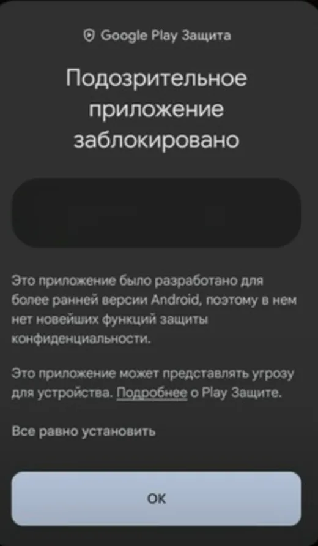
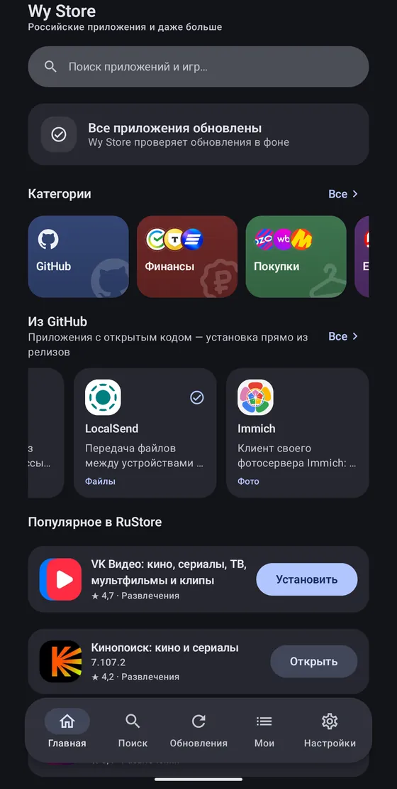
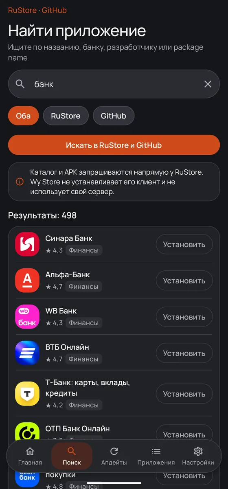
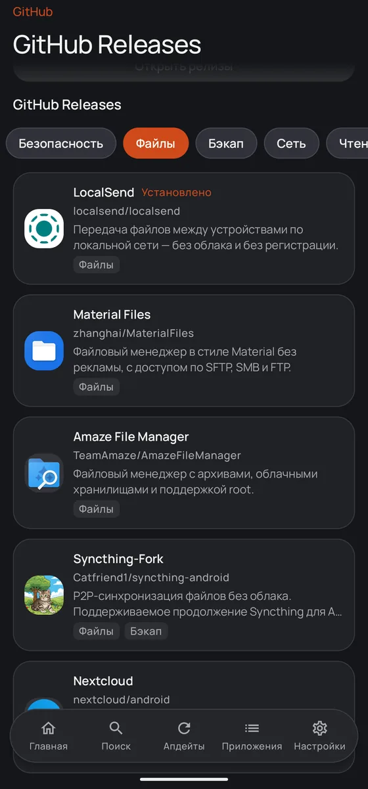
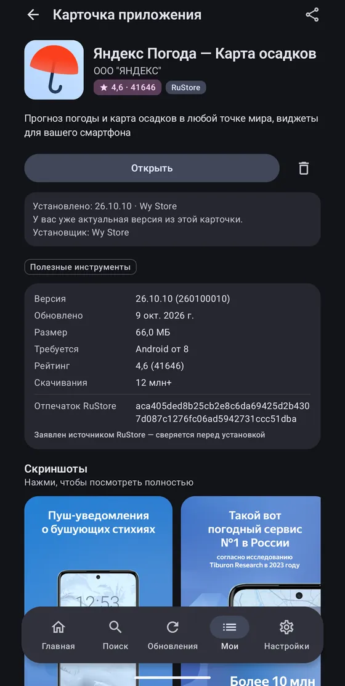
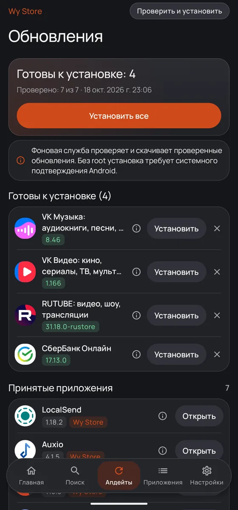
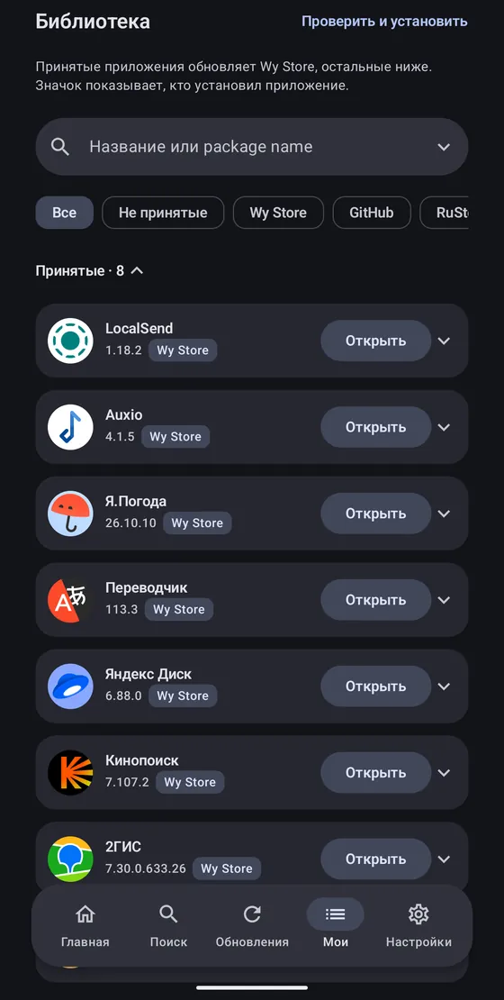

Wy Store
Привычные российские приложения — и никто не следит, что вы ставите
Те же приложения, что и в RuStore, плюс релизы с GitHub. Wy Store скачивает и ставит их сам, через системный установщик Android. Аккаунт не нужен — ни RuStore, ни какой-либо ещё.
Android 9.0 и новее · телефоны и Android TV · около 32 МБ · открытый код, лицензия MIT
Поиск по каталогу RuStore
Ищите по названию, банку, разработчику или package name. В карточке — рейтинг, раздел и статус: установлено, есть обновление или ещё нет на телефоне. Каталог и APK запрашиваются напрямую у RuStore: Wy Store не ставит его клиент и не держит свой сервер.
Поддерживаются бесплатные приложения. Платное и покупки внутри остаются за официальным клиентом.
Второй источник — GitHub
Релизы проектов с открытым кодом, которых в RuStore нет: Droid-ify, Neo Store, Syncthing, Ente Photos, Stratum и другие. Ставятся прямо из релизов, у каждой карточки подписан источник.
Свой публичный репозиторий добавляется ссылкой. Релиз выбирается по правилам: nightly-теги и релизы без пригодного APK пропускаются.
Те же файлы, что и в RuStore
Wy Store ставит ровно те приложения, которые разработчики сами выложили в RuStore, — без изменений и без посредников. Файл приходит с серверов RuStore, и перед установкой Wy Store сверяет, что он тот самый: подпись разработчика и версия совпадают с карточкой.
На карточке — версия, размер, требуемый Android, рейтинг и число скачиваний, как и в RuStore.
Обновляется в фоне
Wy Store проверяет обновления по расписанию и скачивает их сам. Дальше всё зависит от телефона: на одних система ставит обновления без вопросов, на других — просит подтвердить. Мы стараемся, чтобы вашего участия требовалось как можно меньше, но обещать это на каждом устройстве нельзя.
| Android 12 и новее | как правило, без вопросов — для приложений, которые ставил Wy Store |
|---|---|
| Android 9, 10, 11 | система попросит подтвердить — так у любого магазина |
| Первая установка | всегда с подтверждением, кроме режима с root |
| С root | по желанию: установка и обновления без окон Android, в том числе в фоне, удаление — без подтверждения. Включается в настройках, по умолчанию выключено |
| Android TV | тот же APK, интерфейс под пульт и ТВ-каталог RuStore; уведомлений нет — готовое к установке показано на главной |
Приложения
Всё установленное, с фильтрами по источнику: Wy Store, GitHub, RuStore. Первыми идут приложения, которые Wy Store поставил или обновлял сам. Обновить и удалить — из этого же списка, «Проверить и установить» — одной кнопкой.
Приложения из Google Play не трогаются, пока вы не включите это для конкретного приложения.
- Ни аккаунта.
- Ни аналитики.
- Ни рекламы.
- Ни ваших данных.
Wy Store ничего о вас не собирает и никуда не отправляет. Приложение обращается только к RuStore и GitHub — за каталогом и файлами. Всё остальное остаётся на телефоне. Политика целиком. Сам сайт только считает просмотры страниц — нашим счётчиком, без cookie и без хранения IP-адресов; статистика открыта: stats.wyrtensi.ru.
Поставить
- Откройте скачанный
wystore.apk. - Android один раз спросит разрешение на установку из этого источника.
- Дальше Wy Store обновляет себя сам — он следит за релизами в репозитории.
- На телевизор — скачайте APK файловым менеджером или поставьте с компьютера:
adb install wystore.apk.

Все версии Wy Store подписаны одним ключом разработчика, и Android не даст подменить приложение чужой сборкой при обновлении. Как проверить подпись вручную — в описании безопасности.
Wy Store не связан с RuStore и не действует от его имени: RuStore здесь — источник данных.





